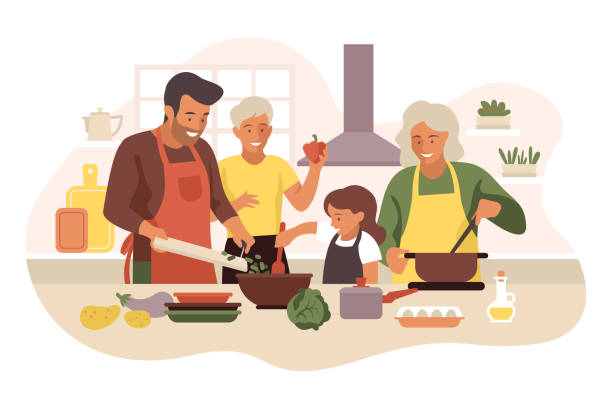

¡Bienvenidos a este rincón culinario!Aqui celebramos la magia de las recetas simples que llenan tu hogar con deliciosos aromas y sabores auténticos. Este es solo el comienzo de nuestro emocionante viaje culinario, y estamos encantados de tenerte aquí. Explora nuestras recetas fáciles, perfectas para todos los niveles de habilidad culinaria. ¡Empecemos a cocinar juntos y a disfrutar de momentos deliciosos en la mesa! |
 |